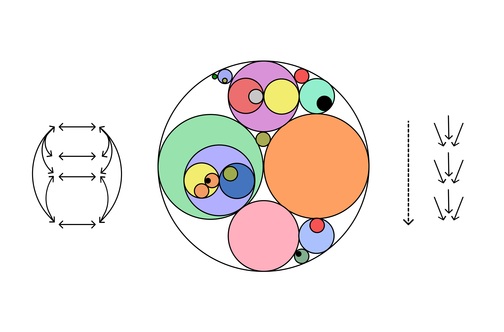

Sections
⧆ Summary
⧆ Biology in the Context of Cosmological Entropy
⧆ Dissipative Systems: From Self-Organization to Autopoiesis
⧆ Entropy and the Directional Trajectory of the Biosphere and Technosphere
⧆ Nonequilibrium Thermodynamics, Biology, and Technology
⧆ Conclusion
⧆ Endnotes
Summary
Originating from nineteenth century physics, the concept of entropy—a measure of disorder, randomness, and/or the dissipation of useful energy—underlay a cosmology where order and complexity were seen as highly improbable phenomena in a universe tending toward chaos and disorganisation. Nearly a century later, frameworks were developed for understanding the production of entropy as an enabling feature of self-organized complexity in the natural world. These ideas would contribute to reconciling the origins, development, and evolution of life with the principles of a thermodynamic universe. For some, they also provided the conceptual foundations for theorizing about a natural tendency within our thermodynamic universe—one which drives the development of increasingly complex and ordered systems that amplify overall rates of entropy-production and energy dissipation. In this text I chart a path through the aforementioned ideas and present their relevance in framing a relationship between our technological civilization and the Earth system. I then turn toward the possibility and desirability of instantiating a future technosphere aligned with thermodynamic principles of dissipation and entropy-production, drawing on recent developments in bioengineering and synthetic biology to envision a paradigm where technology becomes living matter itself.
Biology in the Context of Cosmological Entropy
The concept of entropy originates from nineteenth century thermodynamics and is meant to describe a measure of disorder, randomness, and/or the dissipation of useful energy in a system. In the most general sense, it’s often associated with the idea that natural processes tend to move toward more disorderly states over time. A few simple examples will serve to illustrate this concept. Consider a drop of ink inside a glass of water. Initially, the molecules which make up the ink are concentrated in a small area. However, as time passes, they disperse and spread throughout the molecules of water, leading to a more disordered and random distribution. Eventually, the molecules will become uniformly distributed within the glass, reaching a highly entropic state of thermodynamic equilibrium. Another example is observed when you place a warm object, such as a cup of hot tea, inside a room with a lower temperature. Over time, the temperature differential between the cup and the room will become equalized as heat, or thermal energy, from the tea transfers to the surrounding molecules in the air of the room. Similar to the dissipation of ink in water, the temperature of the tea and the room together will eventually reach an equilibrium where the entropy of the total system has been increased and heat has been evenly distributed throughout the space.
The latter example of heat flow in a system was precisely what physicist and mechanical engineer Sadi Carnot
discovered through his analysis of the efficiency of steam engines (1): i.e. that heat always moves down a gradient
from hotter to colder states. This basic insight would later become the basis for the second law of thermodynamics.
The transformation of thermal energy into mechanical energy—as in the case of a temperature differential powering
a steam engine—also, perhaps unsurprisingly, involves the dissipation of useful energy into the environment in the
form of heat, becoming spread out into the surroundings and therefore incapable of performing work once more.

Dissipative Systems: From Self-Organization to Autopoiesis
Entropy and the Directional Trajectory of the Biosphere and Technosphere
Nonequilibrium Thermodynamics, Biology, and Technology
Conclusion
Endnotes
(1) Carnot, Rudolf Clausius, and William Thomson Baron Kelvin, The Second Law of Thermodynamics: Memoirs by Carnot,
Clausius, and Thomson (Harper & Brothers, 1899).
(2)